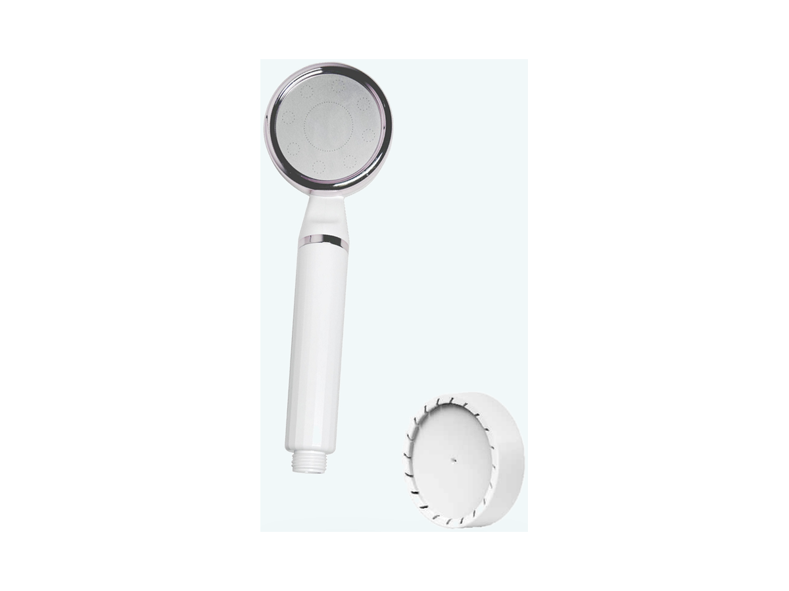

Для душа
Для душаRP-S03
Прямоугольный фильтр для душа
SKU: RP-S03
MOQ: уточняйте при запросе
Главная/Продукция/Фильтры для душа/ RP-S01

Фильтры для душа
Ручной фильтр для душа (H503) — три варианта. RP-S01 возглавляет семейство.
RP-S01, RP-S02 и RP-S06 — три варианта одного ручного фильтра для душа с общими значениями характеристик ниже. Они различаются только цветом и корпусом: RP-S01 (белый + розовое золото, 73 × 253 × 79 мм); RP-S02 (серый + розовое золото); RP-S06 (более тонкий корпус с хромированным кольцом, 86 × 261 × 81 мм). Спецификации подтверждаются для каждой модели и заказа.
Напряжение / частота настраиваются под страну назначения. Другие конфигурации подтверждаются для каждого заказа.
RP-S01 — ручной фильтр для душа (H503) в трёх вариантах с общими значениями характеристик, различающихся только цветом и корпусом: RP-S01 (белый + розовое золото, 73 × 253 × 79 мм), RP-S02 (серый + розовое золото) и RP-S06 (более тонкий корпус с хромированным кольцом, 86 × 261 × 81 мм). Корпус из ABS, картридж PP-вата + витамин C, номинальный расход 4 л/мин, номинальный объём воды 6000 л, температура воды 5–55°C и рабочее давление 0,1–0,4 МПа. Срок службы картриджа — 3–6 месяцев для RP-S01 и RP-S02; для тонкого варианта с хромированным кольцом подтверждается при заказе.
Каков минимальный объём заказа?
Первый заказ — 200 единиц на модель, повторные заказы — 500 единиц.
Можно ли заказать образец до оптового заказа?
Да. Образцы готовы через 15 дней, стоимость образца возвращается при первом оптовом заказе. Оптовые заказы занимают 40 дней после утверждения образца и отгружаются FOB Шэньчжэнь.
Как долго служит картридж?
Срок службы картриджа — 3–6 месяцев для RP-S01 (белый + розовое золото) и RP-S02 (серый + розовое золото). Для тонкого варианта с хромированным кольцом (RP-S06) срок службы картриджа подтверждается при заказе.
Три варианта — указывать при заказе как RP-S01 и назвать вариант (белый + розовое золото, серый + розовое золото или тонкий с хромированным кольцом).
Наведите курсор на изображение варианта, чтобы увидеть его спецификации. На сенсорных экранах коснитесь изображения.


Полные характеристики каждого варианта — рядом. В таблице ниже приведены значения RP-S01.
| Спецификация | RP-S01-1 — белый + розовое золото (H503) | RP-S01-2 — серый + розовое золото (H502) | RP-S01-3 — тонкий, хромированное кольцо (H505) |
|---|---|---|---|
| Корпус | ABS | ABS | ABS |
| Картридж | PP-хлопок + картридж с витамином C | PP-хлопок + картридж с витамином C | Витамин C + PP-хлопок |
| Номинальный расход | 4 L/min | 4 L/min | 4 L/min |
| Температура воды | 5-55°C | 5-55°C | 5-55°C |
| Рабочее давление | 0.1-0.4 MPa | 0.1-0.4 MPa | 0.1-0.4 MPa |
| Номинальный объём воды | 6000 L | 6000 L | 6000 L |
| Срок службы картриджа | 3-6 месяцев | 3-6 месяцев | Подтверждается по заказу |
| Размеры | 73 × 253 × 79 mm | Подтверждается по заказу | 86 × 261 × 81 mm |
| Подключение | Подтверждается по заказу | Подтверждается по заказу | G1/2 |
8 строк спецификаций из каталога ROPureOEM.
| Корпус | ABS |
|---|---|
| Картридж | PP-хлопок + картридж с витамином C |
| Номинальный расход | 4 L/min |
| Температура воды | 5-55°C |
| Рабочее давление | 0.1-0.4 MPa |
| Номинальный объём воды | 6000 L |
| Срок службы картриджа | 3-6 месяцев |
| Размеры | 73 × 253 × 79 mm |
Спецификации взяты из каталога ROPureOEM. Если значение ещё не подтверждено, оно указано как «Подтверждается при заказе» — мы не публикуем неподтверждённые цифры.
Для душаПрямоугольный фильтр для душа
SKU: RP-S03
MOQ: уточняйте при запросе
 Для душа
Для душаПортативный фильтр для душа
SKU: RP-S10
MOQ: уточняйте при запросе
 Для душа
Для душаПроточный предфильтр для душа
SKU: RP-S11
MOQ: уточняйте при запросе
 Для душа
Для душаМультимодальный фильтр для душа — две отделки
SKU: RP-S07
MOQ: уточняйте при запросе